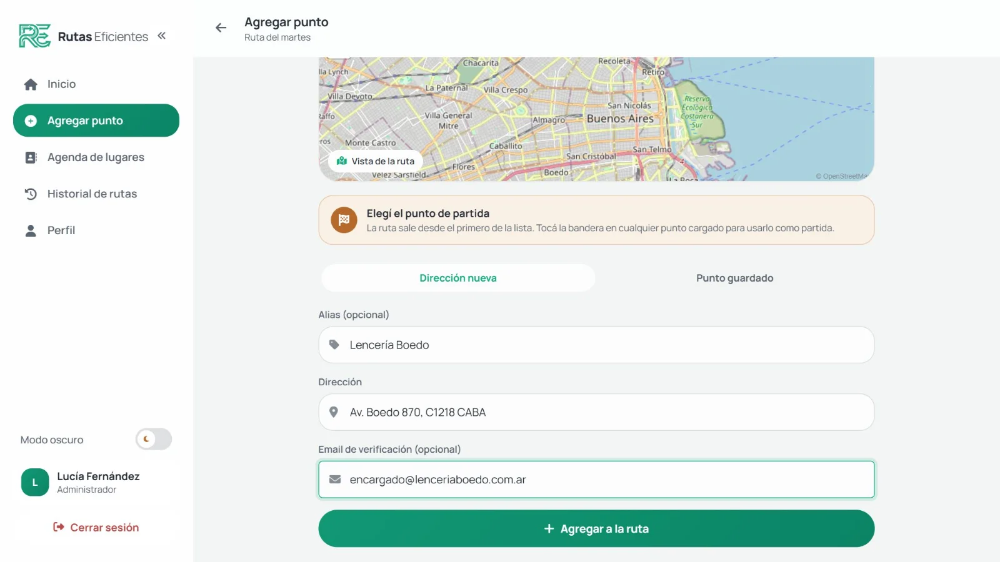
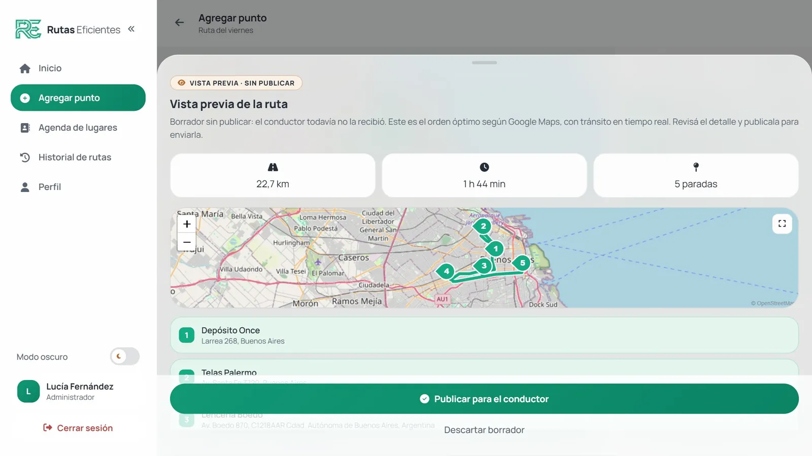
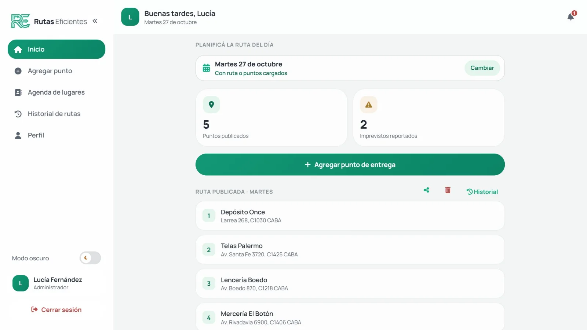
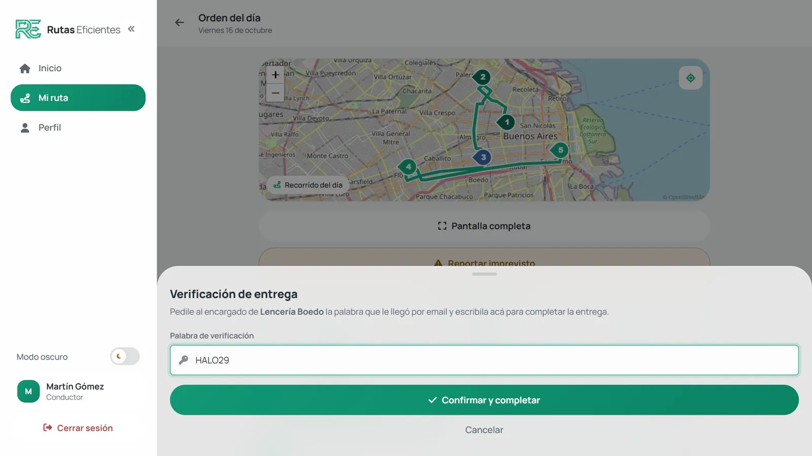
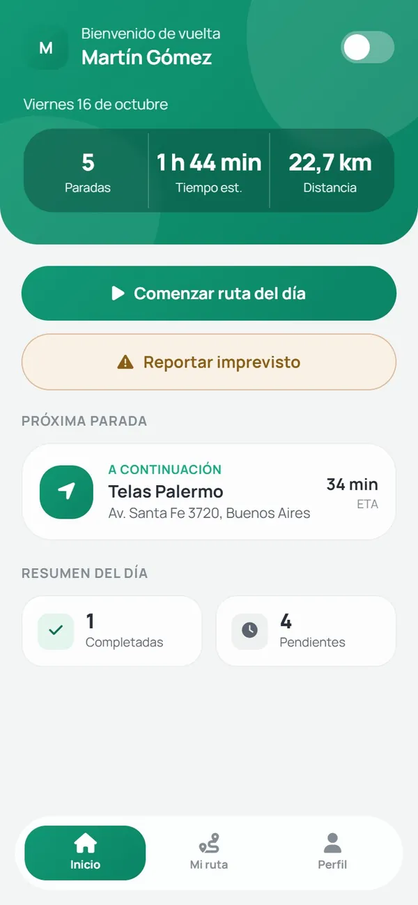
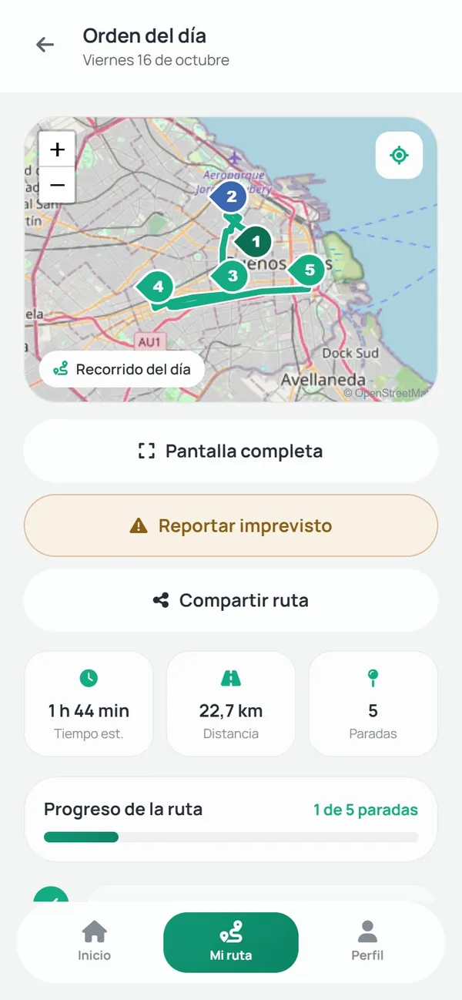
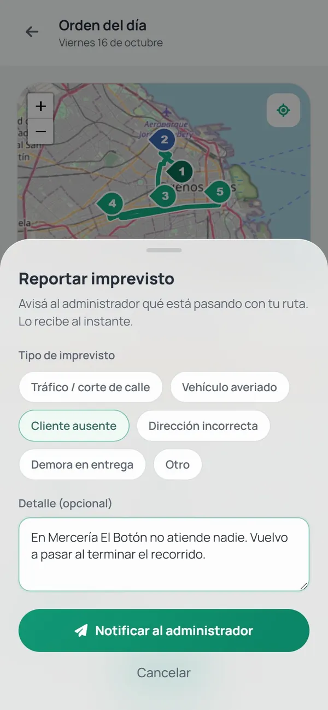

Vos cargás las paradas. El orden lo calcula el sistema.
Rutas Eficientes busca el recorrido más corto entre las entregas del día, con el tráfico del momento, y se lo manda al repartidor al teléfono. Cada parada se cierra con hora y constancia.
Cuando el recorrido se arma de memoria, nadie sabe en qué orden se visitó cada parada, a qué hora, ni si había un camino más corto.
Rutas Eficientes lo convierte en un registro: un orden calculado, un horario por parada y una constancia de cada entrega, visibles para quien coordina mientras el reparto ocurre.
Cómo funciona




-
Cargar
Las direcciones se escriben con autocompletado o se eligen de la agenda de clientes. El primer punto es el origen de la ruta. Si la parada tiene email, se lo carga para verificar la entrega.
-
Calcular
Con dos puntos o más, el sistema consulta Google Routes y devuelve el orden óptimo de las paradas, con el tráfico del momento. Antes de publicar se revisa la vista previa en el mapa.
-
Publicar
La ruta aparece en el teléfono del repartidor. Cada destinatario con email recibe una palabra al azar, que es la constancia de su entrega.
-
Entregar
El repartidor sigue el mapa, pide la palabra al entregar y cierra la parada. Queda registrada la hora de cada entrega y quien coordina ve el avance en vivo.
Qué hace
-
Reordena las paradas para acortar el recorrido total, con el tráfico en tiempo real.
Administración -
Sin la palabra que recibió el destinatario por email, la parada no se puede cerrar.
Repartidor -
Una calle cortada o un cliente ausente llegan al panel de quien coordina en el momento, con aviso sonoro.
Repartidor y administración -
Las direcciones frecuentes se guardan con un apodo y se suman a cualquier ruta en dos clics.
Administración -
Un calendario del mes marca en verde los días que ya tienen ruta; se elige el día y se cierra solo.
Administración -
Las rutas de cualquier fecha, con sus paradas, la distancia, la duración y el estado.
Administración y jefatura



En la calle
El repartidor no instala nada: abre el sistema en el navegador del teléfono, o lo agrega como aplicación desde el aviso de instalación. Ve la próxima parada con su tiempo estimado, el recorrido sobre el mapa y su posición por GPS.
La navegación con voz se abre en Google Maps con las paradas ya cargadas, y los mapas de la pantalla no se mueven sin querer: se desplazan con dos dedos.
El sistema en números
- 31
- endpoints en PHP 8, sin framework
- 7
- tablas en tercera forma normal
- 3
- roles: jefatura, administración y repartidor
- 1
- sola página web, instalable como app
Hecho con PHP 8 y MySQL, mapas de Leaflet sobre OpenStreetMap, y Google Routes y Places del lado del servidor: la clave de Google nunca llega al navegador.
Preguntas
Armado de rutas
Cargué las paradas en un orden y el sistema las cambió. ¿Es un error?
No, es la función principal: el sistema reordena las paradas para que el recorrido total sea el más corto posible, considerando el tráfico del momento.
El botón «Calcular ruta óptima» está gris.
Hacen falta al menos dos puntos cargados. Con uno solo no hay recorrido que optimizar; al agregar el segundo, el botón se habilita solo.
¿Cuál es la diferencia entre «Dirección nueva» y «Punto guardado»?
Una dirección nueva se usa solo en la ruta que estás armando. Un punto guardado es un cliente frecuente con un apodo, que se reutiliza cuando quieras.
El mapa de la vista previa no se mueve cuando lo arrastro.
Es a propósito, para que no se mueva sin querer. En la computadora se mantiene presionada la tecla Ctrl para arrastrarlo o acercarlo con la rueda; en el teléfono se mueve con dos dedos.
Programé una ruta para un día futuro. ¿Se pierde si recargo la página?
No. Las fechas futuras con ruta guardada siguen marcadas en verde en el calendario.
Verificación de entregas
¿Para qué sirve la palabra de verificación?
Es la prueba de que la entrega se hizo. Al publicar la ruta, el destinatario recibe por email una palabra al azar; el repartidor se la pide al entregar y sin ella la parada no se puede cerrar.
¿Se puede mandar la palabra por WhatsApp o SMS?
No, solo por email. Los otros canales requieren contratar un proveedor externo pago.
En la calle
¿Hay que instalar algo en el teléfono del repartidor?
No hace falta: se abre desde el navegador. Si se prefiere tenerlo como aplicación, al entrar aparece el aviso «Instalar Rutas Eficientes»; en iPhone se agrega con Compartir y Agregar a inicio.
¿Tiene navegación con voz?
Sí, a través de Google Maps: el botón de navegación abre el recorrido paso a paso allí. No existe un servicio de navegación con voz gratuito que funcione dentro de una página web.
Se cortó una calle y no puedo llegar a la próxima parada.
Reportá un imprevisto con el tipo y el detalle. Quien coordina lo recibe en el momento, con aviso sonoro, y puede rearmar la ruta si hace falta.
General
¿Los datos están seguros?
Las contraseñas se guardan cifradas, nunca en texto plano, y las claves de los servicios externos viven solo en el servidor.
¿Se puede usar para dos empresas distintas?
No. Cada instalación atiende a una sola empresa; separar los datos de varias requeriría un cambio de fondo en el sistema.
Todas las respuestas están en la guía de inicio rápido y en el manual de usuario.
Equipo
Proyecto final de la Tecnicatura en Informática, 7.º Informática B, Instituto San Leonardo Murialdo.
- Santiago Bravo CejasProject manager y desarrollo backend
- Matías AbrahamAdministración de base de datos
- Ignacio CerredoDesarrollo frontend y backend
- Joaquin DutraDiseño UX/UI y desarrollo frontend
- Franco MascioliInfraestructura y despliegue